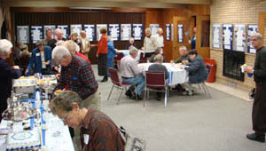
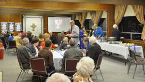
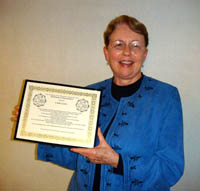

25th Anniversary Celebration
 
2010-11 marked the 25th anniversary of the Fine Arts Board and its programs at The Presbyterian Church of La Porte.
25 Seasons
Recognition
The certificate presented to Linda Lewis at the celebration reads:
Fine Arts Board of The Presbyterian Church of La Porte
 Certificate of Appreciation
Presented to
Linda Lewis
For her inspiration and vision as a founding member of the Fine Arts Board in 1986,
For her many years as ex-officio or regular member of the Fine Arts Board from its beginning in 1986 to 2009,
For her high standards of quality and gracious hospitality with which the series came to be identified,
For her assistance in finding aspiring artist and performers of diverse talents to share with the community,
For her attention to detail and dedication to all tasks,
For her continued support and encouragement of Fine Arts through coordination of the summer carillon recitals and numerous behind-the-scenes duties,
Today we gratefully honor Linda's faithfulness and hard work for many years and still continuing.
Presented this 14th day of November, 2010 in La Porte, Indiana
Commissioned Hymn
The Board commissioned the following hymn for the 25th Anniversary Celebration. It was written by Mary Nelson Keithahn and sung to the hymn tune “La Porte” composed by John D. Horman.
God, Your Voice Called Forth Creation

God, your voice called forth creation,
drawing mountains from the seas,
sculpting valleys, painting deserts,
filling fields with fruit and trees.
You infused the earth with music,
a great symphony of sound:
whistling winds and clapping thunder,
raindrops falling on the ground.
In the rhythm of the seasons,
night and day, year after year,
you brought order out of chaos,
that new life-forms might appear.
With an artist's eye for beauty
and a crafter's steady hand,
you began to fashion creatures
in the sea and air, on land.
drawing mountains from the seas,
sculpting valleys, painting deserts,
filling fields with fruit and trees.
You infused the earth with music,
a great symphony of sound:
whistling winds and clapping thunder,
raindrops falling on the ground.
In the rhythm of the seasons,
night and day, year after year,
you brought order out of chaos,
that new life-forms might appear.
With an artist's eye for beauty
and a crafter's steady hand,
you began to fashion creatures
in the sea and air, on land.
Then you made us, man and woman,
in your image, each unique,
to envision and imagine,
to compose and write and speak,
to reflect on all creation
and the wonders that we share,
to relate to all your creatures
that surround us everywhere.
In the art that we envision,
and the songs that we compose,
in each story we imagine,
in ideas we propose,
may our work reflect your image
and our lives your holy ways,
that to you, our God, Creator,
we may offer grateful praise.
Mary Nelson Keithahn (center) holding a copy of her text in your image, each unique,
to envision and imagine,
to compose and write and speak,
to reflect on all creation
and the wonders that we share,
to relate to all your creatures
that surround us everywhere.
In the art that we envision,
and the songs that we compose,
in each story we imagine,
in ideas we propose,
may our work reflect your image
and our lives your holy ways,
that to you, our God, Creator,
we may offer grateful praise.
© 2010 Mary Nelson Keithahn.
Used by Permission.
Used by Permission.
at The Hymn Society, 2011 Annual Conference
held in Colorado Springs, Colorado